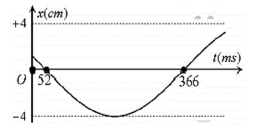

PHẦN I. Câu trắc nghiệm nhiều phương án lựa chọn
Mỗi câu có 4 phương án, chỉ chọn một đáp án đúng (0,25 điểm).
1
Một chất điểm dao động điều hoà với phương trình dạng $x=5\text{cos}\left( \pi t+\frac{\pi}{6}\right)\text{cm}$. Lấy $\pi^{2}=10$, biểu thức gia tốc tức thời của chất điểm là
2
Một vật dao động điều hòa trên quỹ đạo thẳng nằm ngang dài 20 cm . Biết trong khoảng thời gian 10 s , vật thực hiện được 20 dao động toàn phần. Gia tốc của vật có giá trị cực đại bằng
3
Khi một vật dao động điều hòa, chuyển động của vật từ vị trí biên về vị trí cân bằng là chuyển động
4
Một vật nhỏ dao động điều hòa với li độ $x=10\cos\left(\pi t+\pi/6\right)$ (x tính bằng cm, t tính bằng s). Lấy $\pi^{2}=10$. Gia tốc của vật có độ lớn cực đại là
5
Dao động điều hòa có vận tốc cực đại là $v_{max}=8\pi$ cm/s và gia tốc cực đại $a_{max}=16\pi^{2}$ cm/s$^{2}$ thì tần số góc của dao động là
6
Tìm phát biểu sai khi nói về dao động điều hoà.
7
Một chất điểm dao động điều hoà với tần số 4 Hz và biên độ dao động 10 cm. Độ lớn gia tốc cực đại của chất điểm bằng
8
Một vật dao động điều hoà với phương trình x = 5cos(8t + π/4) (cm); t tính bằng giây. Gia tốc cực đại của vật có giá trị bằng
9
Một chất điểm dao động với phương trình $x=8\cos(5t)$ cm (t tính bằng s). Gia tốc của chất điểm tại vị trí biên có độ lớn
10
Một vật dao động điều hòa trên trục Ox quanh vị trí cân bằng O. Khi nói về gia tốc của vật, phát biểu nào sau đây sai?
11
 Hình bên là đồ thị biểu diễn sự phụ thuộc của vận tốc v theo thời gian t của một vật dao động điều hòa. Vận tốc cực đại của vật là
Hình bên là đồ thị biểu diễn sự phụ thuộc của vận tốc v theo thời gian t của một vật dao động điều hòa. Vận tốc cực đại của vật là12
Một vật dao động điều hòa dọc theo trục Ox, biết vận tốc của vật khi qua vị trí cân bằng là $v_{max}$ và gia tốc cực đại của vật là $a_{max}$. Biên độ dao động và tần số góc của vật lần lượt là:
13
Hình vẽ là dao động điều hòa của một vật. Hãy xác định tốc độ cực đại của vật dao động:

14
Một vật dao động điều hòa trên trục Ox có đồ thị như hình vẽ. Tốc độ dao động cực đại của vật là

15
Tìm phát biểu sai khi nói về dao động điều hoà?
16
Một vật nhỏ đang dao động điều hoà trên trục Ox. Khi vật chuyển động từ vị trí biên về vị trí cân bằng thì
17
Một vật dao động điều hòa với phương trình $x=10\cos\left(5\pi t+\frac{\pi}{3}\right)\ cm$. Xác định vận tốc của vật tại thời điểm $t=0,5$ (s).
18
Dao động điều hòa có vận tốc cực đại là $v_{max}=8\pi$ cm/s và gia tốc cực đại $a_{max}=16\pi^2$ cm/s² thì tần số góc của dao động là
19
Một vật nhỏ dao động điều hòa với li độ $x=10\cos(\pi t+\pi/6)$ (x tính bằng cm, t tính bằng s). Lấy $\pi^2=10$. Vận tốc của vật có độ lớn cực đại là
20
Một chất điểm dao động điều hòa với phương trình $x=20\cos(2\pi t)\ \text{cm}$. Lấy $\pi^{2}=10$. Gia tốc của chất điểm tại li độ $x=10\ \text{cm}$ là